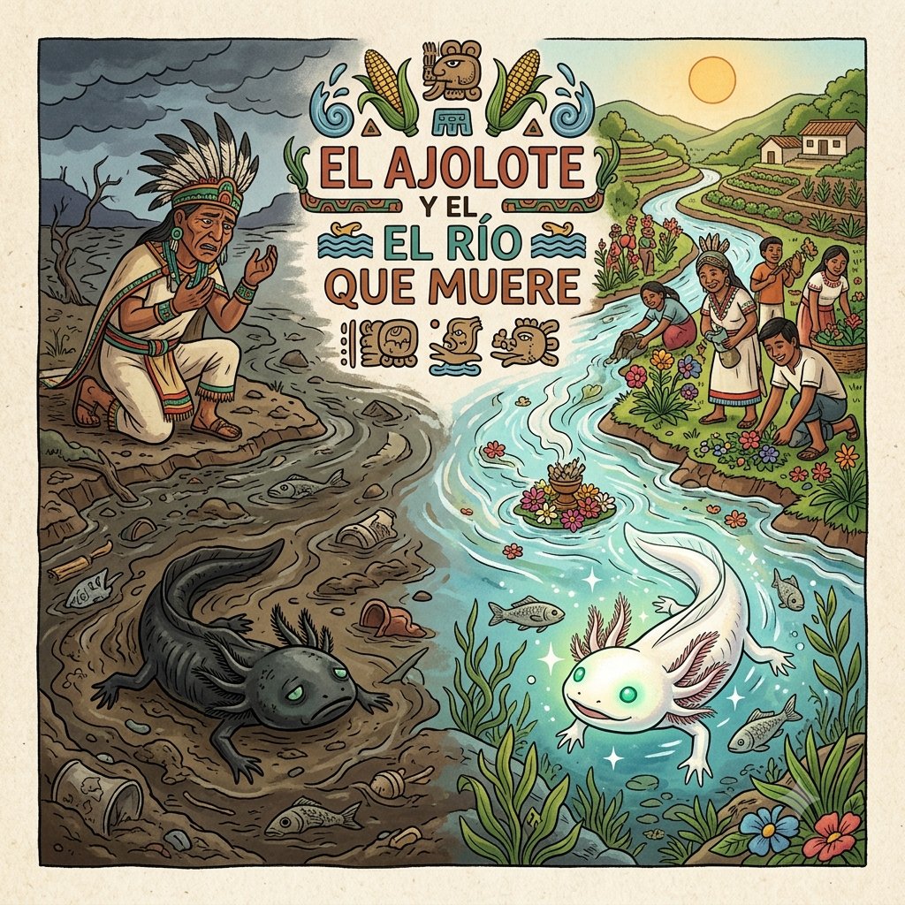
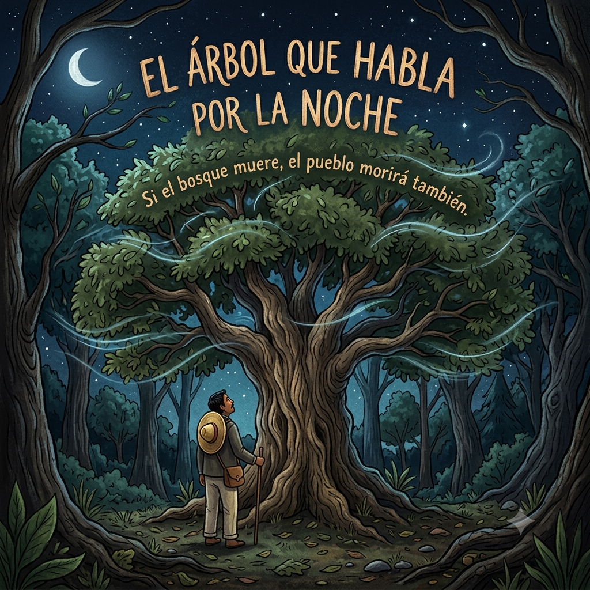
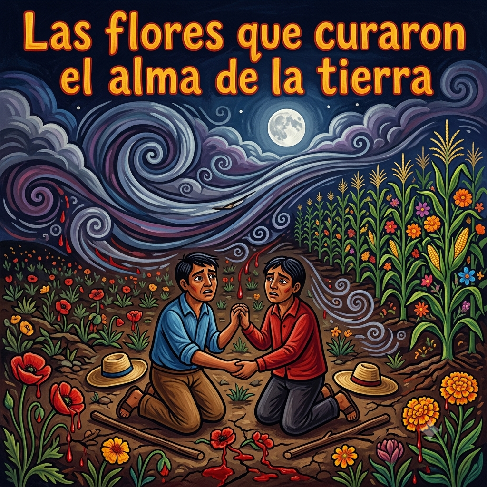

Bienvenido al mundo de los cuentos
Descubre historias increíbles, personajes fantásticos y enseñanzas que te acompañarán siempre.
🌿 Cuentos destacados

El hombre que buscaba el origen de la luz
Una sabia historia sobre Juan y dónde se esconde la verdadera felicidad.
Leer cuento

La serpiente y el curandero del pueblo
Una lección de humildad para Don Mateo en las faldas de la Matlalcueye.
Leer cuento

El préstamo de la noche y la luz
La historia de María y cómo el amor sincero guía a las almas en el Día de Muertos.
Leer cuento

Las flores que curaron el alma de la tierra
La historia de Pedro y Lucas, y la gran lección de respeto que les dio nuestra madre tierra.
Leer cuento